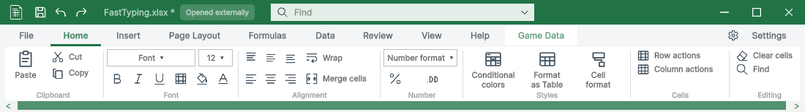
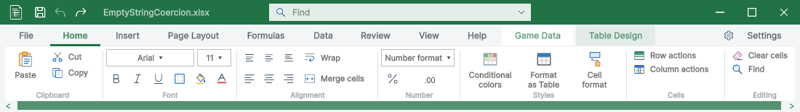
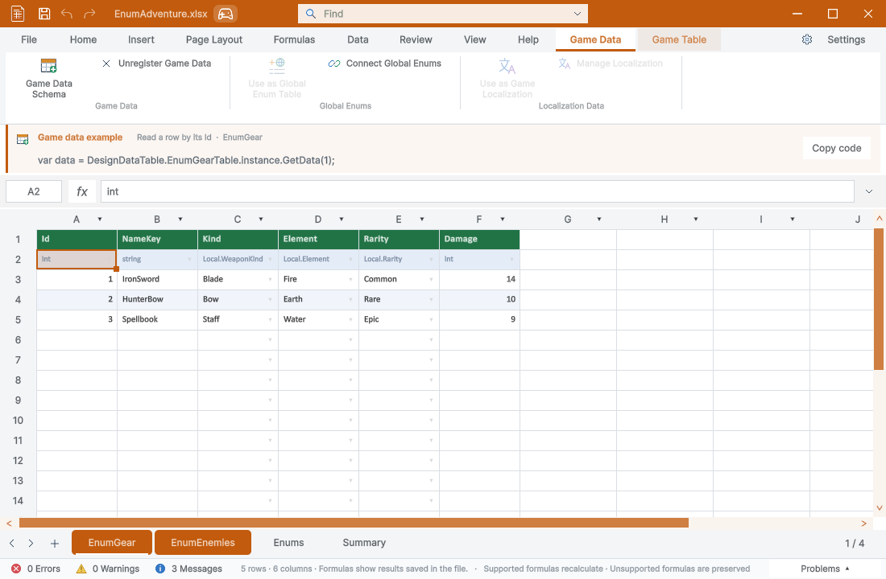
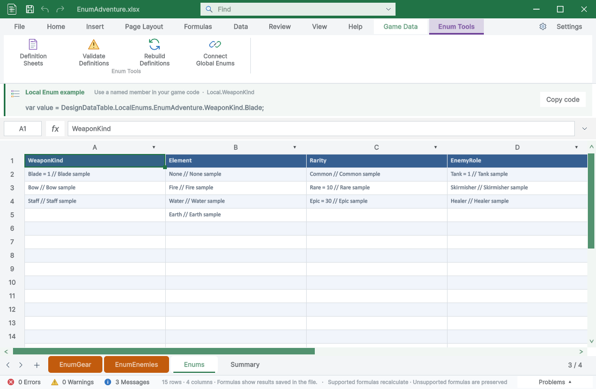
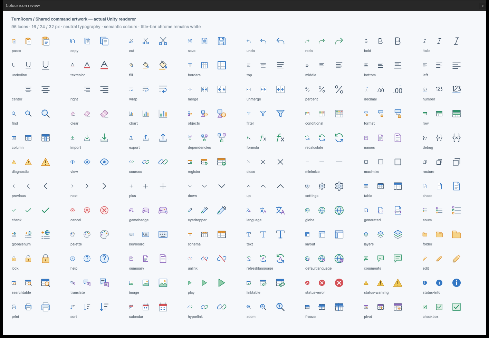
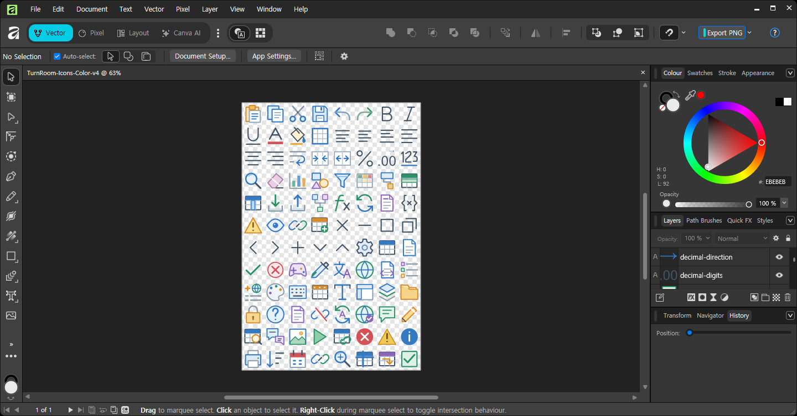

Tracefolio REPORTS & ISSUES
Tracefolio REPORTS & ISSUES리본 아이콘96개 컬러 재정비 — Affinity 원본·실제 Unity 검수
완료단색 강제 처리를 제거하고 전체96개를 검수·수정했습니다. Affinity 벡터 원본, PNG, 실제 화면과9개 언어 가이드를 갱신했습니다.
작업 결과
아이콘 요청 범위의 구현·편집 원본 저장·제품 적용·필수 검증을 완료했습니다. 실제 화면과 전체 카탈로그를 아래에서 확인할 수 있습니다.
변경 내용
적용 내용
| 변경 | 내용 |
|---|---|
| 전체96개 | 형태·선 굵기·크기·여백을 검수하고 기능별 부분 색상 적용 |
| 색상 보존 | 창 강조색으로 아이콘을 단색 덮어쓰기하던 처리 제거 |
| UI Toolkit | 일반 아이콘도 컬러를 기본값으로 통일 |
| 잘못된 연결 | 도형·그림 버튼의 파일 아이콘 별칭 수정 |
| 소수점 | D처럼 보이던 모양을 Affinity에서 .00으로 교정·광학 확대 |
| 대비 | 제목 표시줄은 흰색, 글자형·창 제어는 중립색 유지 |
| 편집 원본 | 래스터 한 장 대신449개 벡터/문자 노드를 보존한 .af 제작 |
| 자료 정리 | 최종 원본·출력·카탈로그·안내만 Assets에, 중간 자료는 QA 보관 |
| 문서 | 캡처36개 갱신·9개 언어 HTML 가이드 재생성 |
편집 원본: Assets/TurnRoom/Templete/Development/Art/ColorIcons/TurnRoom-Icons-Color-v4.af
제품 PNG: Assets/TurnRoom/Templete/Editor/Art/RibbonAtlas.png
기존 래스터 원본은 보존했고 Art/README.md에 현재 편집 원본 위치를 명시했습니다.
검증
| 검증 | 결과 |
|---|---|
| 전체96개 PNG·안전 여백 | 모두 통과 |
| 실제 카탈로그 초기화·제품 별칭 | 493개 단언 통과 |
| 삽입·표·툴팁 회귀 | 803개 단언 통과 |
| 최종 빌드 | 오류0·기존 XML 주석 경고8 |
| Unity 실제 표시 | 전체96개,16·24·32px 검수 |
| Windows API 직접 조작 | 기본/표 탭10개 및 전용 탭·설정·검색·인스펙터·선반 확인 |
| Affinity 저장·닫기·재열기·재출력 | 픽셀 동일 |
| 9개 언어 HTML 가이드 | 이미지41개·링크·현재 캡처 검증 오류0 |
| 실제 브라우저 | 글꼴·탭·키보드·이미지·모바일144개 검사 통과 |
추가 옵션·도형/그림/차트·Play 잠금 화면은 실제 Unity GUIView로 재촬영했습니다. 일부 준비 단계의 합성 이벤트를 Windows 직접 입력 통과로 계산하지 않았습니다. 최초 경계 넘침·중복 키·잘못된 별칭의 실패와 재검사 이력을 보존했습니다.

수정 전 공통 리본 — 실제 QA 캡처

수정 후 공통 리본 — 실제 Unity 캡처

도형·그림의 잘못된 파일 아이콘 연결 수정

게임 데이터 컬러 아이콘과 비활성 상태

Enum 전용 도구

로컬라이징 전용 도구

전체96개 — 실제 공통 Unity 렌더러,16·24·32px

실제 Affinity 편집 화면 — 벡터 레이어를 보존한 원본
남은 사항
요청한 아이콘 범위에서 남은 구현은 없습니다. 전체 Excel 기능·모든 단축키·모든 DPI·모든 언어의 모든 화면을 전수 검증했다는 뜻은 아닙니다. 문서 갱신은9개 언어 HTML 가이드이며 PDF는 재생성하지 않았습니다.
교훈 검토: 의미별 색상 보존, 실제 벡터 원본 확인, 제품 별칭까지 실행 검증하는 규칙을 프로젝트 AGENTS.md에 추가했습니다. 프로젝트 전용 요구이므로 전역 지침은 변경하지 않았습니다.
자동 승인 검토가 기존 미커밋 파일을 되돌릴 수 있는 git restore를 거부했습니다. 실행하지 않고 기존 체크아웃을 보존한 새 체크아웃으로 게시했습니다.
작업 시간
- 제안 시간: 40~70분
- 실제로 완료된 시간: 2026-10-31 12:36:56 KST 시작. 핵심 구현·필수 검증은13:27:20 KST에 완료(50분24초). 보고서 게시·배포 확인 시간은 최종 채팅에 별도로 기록합니다.
- XERJ: 사용 — XERJ로 TemplateIcons/ArtworkTexture 경로를 찾고 현재 공통 카탈로그·제품 별칭·실제 렌더와 대조했습니다.